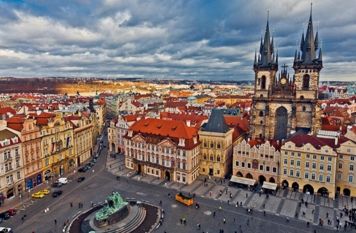

Чому саме Прага?
Прага — одне з найкрасивіших міст Європи, де збереглася неймовірна готична й барокова спадщина. Місто славиться своїми кам'яними мостами, вежами та особливою казковою романтикою.

Що обов'язково подивитися:
- Карлів міст через Влтаву
- Празький град та Собор Святого Віта
- Староміська площа з Астрономічним годинником (Орлой)
- Вишеград